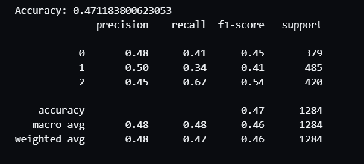

Featured Projects

Crop Disease Detection with Explainable AI
PyTorch · Grad-CAM · Computer Vision · Streamlit
ResNet18-based classifier for 38 crop disease classes with visual explanations.

Fake News Detection using BERT
Transformers · NLP · PyTorch
BERT-based fake news classification and political fact checking.